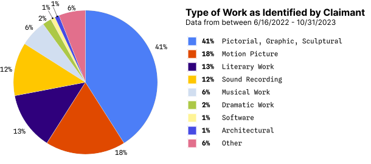

Foreword
The Center for Cultural Innovation (CCI) was founded in 2001 to help level the playing field for individual artists by providing them with knowledge, networks, and financial tools to strengthen their self-sufficiency and creative independence. Since 2002, we have expanded and evolved our work to include Advocacy and the advancement of efforts that improve the conditions of artists and arts workers.
CCI approaches its advocacy work through the framework of power, opportunity, and protections. What upstream policy issues can we reimagine to ensure power is equally distributed, especially to those who have historically been disempowered? How can our efforts provide equal opportunities to artists, regardless of their background? And especially in the case of the Guide, how are we guaranteeing artists a sense of protection of their livelihood, culture, and dignity as vital participants in our society?
With this framing, we are focused not only on passing and reforming policy but also on ensuring its implementation is working as it was intended. This Guide was developed out of this desire: to hold new policy and public resources accountable for what they were designed to do and to center the voices and needs of those they were designed to bring justice to.
CCI’s work is only possible because of our dedicated community and partnerships. Helping to turn the Guide into a reality were the amazing students and staff of Stanford University’s Juelsgaard Intellectual Property and Innovation Clinic, including:
Phil Malone, Clinic DirectorNina Srejovic, Clinical Supervising Attorney and Lecturer
Caitlin Cary Burke, Certified Clinical Law Student
Kiran Wattamwar, Certified Clinical Law Student
The Guide would also not have been possible without the support of the William & Flora Hewlett Foundation and the Kenneth Rainin Foundation, as well as the hard work and dedication of the CCI team involved in stewarding this partnership:
Laura Poppiti, Deputy DirectorJennelyn Tumalad Bailon, Senior Program Associate
Jessica Mele, Program Director, Research to Impact Lab
Anavictoria Avila, former Program Manager, Research to Impact Lab
To all who have helped CCI advance the cause of artists, cultural producers, and arts workers, thank you.
President and CEO,
Center for Cultural Innovation
About the guide
Maybe you are a creator who feels their work was copied and wants to set things right. Maybe you recently received a claim that you copied someone else’s work. Or maybe you’re just curious about the Copyright Claims Board (CCB).
Regardless of what brought you here, this document is a starting point and a guide for creators. This guide helps you navigate the CCB, but it is not comprehensive, and there will be moments when outside resources are pointed to for additional guidance.

What is copyright?
Imagine you spend hours painting a beautiful landscape—after weeks of work, you upload an image of your painting to share with the world in your online portfolio. A few days later, you see a copy of your painting sold as a print on an online marketplace. Have your intellectual property rights been violated? It's possible they may have.
Intellectual property refers to creations of the mind, such as inventions and artistic works[1]. Intellectual property (IP) rights allow individuals to protect their work by preventing others from reproducing or exploiting their intellectual creations [2]. You’re likely already familiar with forms of IP, like copyright, patent, and trademark. Copyright deals with the ownership and use of works like software, architecture, art, writings or novels, and music [3]. It includes the exclusive rights to reproduce, prepare derivative works, distribute copies (including by sale), and—depending on what kind of work it is—the rights to publicly perform or display the work.
Copyright laws “promote the progress of science and useful arts . . .” [4] because they incentivize people to develop new intellectual property. Copyright law protects artistic labor by creating a boundary around what work creators can guard through legal protections. In this way, copyright law promotes innovation because artists know they can be paid for their protected work. The basic purpose of copyright is to “enrich our society's wealth of culture and information” [3].
Copyright is different from Copyright Registration
Copyright is established as soon as your expressive work is complete, but registering a copyright gives your work special legal protections.
Copyright Upon Fixation
The right to register a work for copyrightToday, creators earn a "copyright upon fixation" after completing their work [7]. Creators’ works are automatically copyrighted upon “fixation”[8]. Fixation occurs when a work is:
- fixed in a tangible medium of expression (e.g. a musical work on a record),
- able to be perceived, reproduced, or otherwise communicated, either directly or with the aid of a machine or device [8].
Thinking back to the landscape painting example—the work is fixed as soon as you finish the painting. At that moment, you have a copyright in the work.
The copyright granted at fixation gives you the legal right to exclude others from using your work, but you cannot sue to defend your work from infringement without more. An application for copyright registration is sufficient to file a claim with the CCB, but if you are suing in federal court you must actually have a copyright registration, or the Copyright Office must have refused registration. This is why the U.S. Copyright Office recommends that creators take the additional step to register their work [9].
Registered Copyright
The right to sue and defend ownership of your work in courtUnlike fixation, copyright registration creates legal benefits that can be enforced in courts or the CCB. A creator cannot bring a claim or litigate an issue of copyright without applying to register their copyright[10]. This is the key distinction between a copyright and a registered copyright.
The CCB requires that a claimant has applied to register their copyright before bringing infringement claims. An application for copyright registration may be pending for several months before it is approved, but as long as a claimant has an application pending, they will be able to bring claims with the CCB. This is not uniformly true for claims brought in federal courts.
Even though one can apply for registration after infringement occurs and still bring a claim, there is still in an incentive to apply for registration during or soon after making a creative work public. Creators may be entitled to lower damages for infringement if their work was registered after the act of infringement occurred and they applied for registration three months after publishing the work [36] For respondents, this may affect the damages involved if they are liable and may also affect their ability to file an infringement counterclaim if they believe the claimant is actually the one infringing on their work.
How do you register for a copyright?
You can register a copyright for many different forms of art (for example, motion pictures, sound recordings, musical compositions, literary works, computer programs, and marketing photographs). Applying for registration requires sharing a copy of your work, a filing fee, and information about the work [11], [6]. There are two paths to apply:
In advance, with the Copyright Office • You can submit an application with the U.S. Copyright Office (you can do so fully online in many cases).
With the Copyright Office, while filing a claim or counterclaim • You can apply to register your work even after infringement occurs with the US Copyright Office. For expedited review, you can optionally pay a fee and request expedited registration. If the Copyright Office denies your application for copyright registration while you have a pending claim, the CCB will dismiss your case without prejudice— that means you can still refile the claim again in the future, after you successfully secure registration.
- Works gain copyrights once they are "fixed" in a tangible expressive medium.
- Copyright registration makes it possible to seek legal remedies when your copyright is infringed (some cases require registration to occur within three months of publication of the work for the remedy to apply [35]).
- You are required to have copyright registration or pending copyright registration for works you seek to defend with infringement claims with the CCB.
What is the Copyright Claims Board?
In December 2020, the Copyright Alternative in Small-Claims Enforcement Act of 2020 (CASE Act) gave the Copyright Office the power to establish the Copyright Claims Board (called the “CCB”) [12]. The CCB was established by the federal government with the goal of expanding “access to justice” making “the copyright system as understandable and accessible to as many members of the public as possible.” [13]. Keep in mind that creatives can bring forth claims through the CCB but can also be sued by other creatives and corporations through the CCB (more on this later).
Three presiding officers—each with deep expertise in copyright law—make case determinations and lead the CCB. Tribunal hearings and proceedings are conducted fully online, reducing the barrier to entry that can occur when proceedings occur in court. The CCB is designed for claimants to navigate without an attorney, though you are welcome to hire one. Although litigants can represent themselves in federal court, some may find the CCB’s process easier.
The CCB sees all kinds of copyright cases. As of 2023, the most common claims were for pictorial, graphic, or sculptural works.

Unlike federal court, the CCB’s jurisdiction is limited to claims for copyright infringement, noninfringement, and misrepresentation in situations involving notices sent under the Digital Millennium Copyright Act (DMCA) [15], [16].
Unlike federal court, the CCB’s jurisdiction is limited to claims for (1) copyright infringement, (2) noninfringement, and (3) misrepresentation in situations involving notices sent under the Digital Millennium Copyright Act DMCA), which addresses the relationship between copyright and the internet [15], [16]. Under the DMCA, people can file takedown notices with online services (imagine YouTube, Etsy, Spotify, etc.). If this was in error or based on misrepresentations, creatives might find themselves filing a counter-notice to get their content reinstated. Neither party can bring a claim before the CCB seeking more than $30,000 in total damages (more on this later).
Notably, participation in the CCB is also fully voluntary. No matter how strong a claim is, a respondent (the person who the claim is brought against) can opt out of the CCB proceeding, leading the CCB to dismiss the case. After dismissal, a claimant (the person bringing the claim) can still bring the same claim in federal court against the respondent. Here, respondents cannot opt out. But bringing claims to federal courts can be expensive, difficult to navigate, and time consuming. Sometimes, it may be worth filing a claim with the CCB (where it’s relatively easy and inexpensive to file) but not worth following up in federal court. If you’re a respondent, consider reading our Respondent’s Guide.
Respondents who do not opt out can choose to file counterclaims against claimants. The CCB only hears limited counterclaims (infringement, noninfringement, misrepresentation, and contract-based counterclaims involving agreements like licenses) and they must arise from the same “transaction or occurrence” (the same facts and circumstances) as the original claim brought by the claimant.
Could the CCB be right for you?
The CCB is one among a few options you have to legally defend your intellectual property. The CCB's process is different from that of federal courts, and comes with its own eligibility requirements.

What are the tradeoffs of filing with the CCB?
There are some advantages and disadvantages to filing with the CCB as opposed to filing in federal court. Consider the following when you consider your claim:
üëç ADVANTAGES
- There is no attorney required.
- You can avoid attorney’s fees by filing with the CCB.
- The CCB is a more approachable court system.
- The CCB is entirely online, and there are some advantages to a digital court system. The CCB’s online forms have text boxes for input information.
- The online forms will help you figure out the information you need to file a claim and navigate court proceedings.
- There is a low filing fee—filing your claim and proceedings to an active case require $40 and $60, respectively.
- The administration is fully remote, negotiating travel costs and conflicts with other commitments.
- Decisions are made by a panel of experts on copyright who focus primarily on these cases.
üëé DISADVANTAGES
- There is no attorney required.
- Filing alone can sometimes be confusing, and it is important to remember that you need enough evidence to support a viable claim. This can be easier with the help of an attorney who can guide you through the process. Remember that you can also file with the CCB with an attorney.
- Damages are limited to $30,000 per proceeding.
- Respondents may not agree to litigate via the CCB.
- Evidence to support your claim must be captured digitally.
- To create a compelling claim, you need to capture all your communications and images digitally and in a format that will help the CCB officers assess your claim.
Is your claim eligible for the CCB?
Filing a successful claim with the CCB may not be as easy as it seems. Review the list below to determine if the CCB is right for you. All the following must be true for you to be eligible to bring a claim, in general:Filing a successful claim with the CCB may not be as easy as it seems. Review the list below to determine if the CCB is right for you. All the following must be true for you to be eligible to bring a claim, in general:
- The respondent lives in the United States.
You must provide a US-based address for each respondent upon filing. - You have either an infringement, noninfringement, misrepresentation, or counterclaim.
Counterclaims are filed by the respondent, who may disagree with your original claim. - You registered (or have a pending registration application) your work at the Copyright Office.
To learn more about registering your work, go to the Registering a Work FAQ provided by the Copyright Office. - The statute of limitations has not expired.
Under the Copyright Act, a plaintiff must bring the suit on time—either within three years of the infringing activities, or within three years of your discovery of the infringing acts, if that is the rule of the state with the strongest connection to the parties and claim involved [37]. - You have not exceeded your limit of 30 total claims within 12 months.
- You have a right to file this case (e.g. you own the copyright you seek to enforce).
- If you have previously filed this claim with the CCB, it has not been dismissed with prejudice or reached a final determination before it was closed. You also cannot file a claim if you received a final judgment on the same claim in a federal court.
- The CCB or any court has not already reached a final decision on this claim, and the claim is not currently pending before a court (unless it granted a stay on your claim or counterclaim to proceed with the CCB).
- You are okay with a damages cap of $30,000 or $5,000 for smaller claims.
-
You are okay with knowing that your claim depends on a response by your respondents.
Note: Respondents can opt out of CCB proceedings. If they opt out, you can refile in federal court either by yourself (as a pro se litigant) or with an attorney.
DAMAGES & SETTLEMENTS
When you file a claim, you’ll need to indicate the compensation you are requesting. The list below summarizes some issues to consider:
- The CCB only allows for actual or statutory damages. If you think you have a better chance of seeking higher damages in federal court, then the CCB may not be your best option.
- If you are seeking damages under $5,000, you may want to consider filing under a simplified CCB “Smaller Claims” track. This track will involve only one presiding officer, who plays a more prominent role in the case. The CCB published a helpful table highlighting the key differences between this track and the default track in its handbook for Smaller Claims (Page 3).
- A claimant bringing an infringement claim can seek an award of actual damages and the infringer’s profits, statutory damages, or no damages. The claimant must choose which type of awards they are seeking before the Board makes its final determination, and they should do this no later than when the claimant submits their written testimony in the proceeding. Statutory damages are capped at $15,000 per infringed work (not per infringement) or $7,500 if the work wasn’t registered in a timely manner (as described below under “Statutory Damages”). For more information on damages, see the CCB book on statutory damages.
- If you choose to participate in CCB-facilitated settlement discussions, a Copyright Claims Officer other than the one handling the day-to-day aspects of the proceeding will be assigned to assist you at a settlement conference. For more information on settlements, see the CCB handbook on settlements (Page 4).
Helpful Terminology
The CCB frequently uses these terms in their forms, proceedings, and handbooks.
| Term | Definition |
| Claimant | Someone who brings a claim to the CCB. Because a claimant begins the process, they are responsible for filing a claim, serving the claim, and for paying the required fees ($40 at first, and $60 when the case is ready to go active). |
| Respondent | Someone against whom a claim is brought. They learn about a claim when a claimant serves them with notice and can opt out or make their own case with the CCB. Notice is a type of document that informs a defendant or respondent that the plaintiff or claimant is asking them to appear in court about a matter over which they take issue. |
| Notice | A formal communication that informs someone of a legal claim being brought against them. |
| Relief Sought | “Relief sought” are seeking describes in court is how a claimant wants the court to address remedy your their problem. Unlike federal courts, the CCB can only grant monetary relief based on actual damages. It cannot compel a person to carry out or refrain from certain conduct unless parties mutually agree to do so. |
| Damages |
Damages are your monetary relief if you prevail in your claim. When filing a claim, you will be asked to pick the kind of damages you are seeking (actual, or statutory; not both).
Example: You lost money because your sales were diverted to someone else’s product that copied protected aspects of your work. |
| Actual Damages |
Awards based on proven harms or losses you have suffered. Example: You lost money because your sales were diverted to someone else who copied your registered work. |
| Statutory Damages | Damages prescribed by law (for example, copyright infringement can result in $15,000 awards per infringed work if registered on time [36]). |
| Infringement |
Infringement claims are relevant if a claimant believes that someone improperly used their original and protected work. To bring a CCB infringement claim, one must (1) have applied for copyright registration for their work, (2) hold exclusive rights over the work, and (3) prove that someone else violated their exclusive rights. Example: You independently released a song (this is fixation) on SoundCloud a few years ago and registered it for copyright protection with the US Copyright Office. Recently, you discovered a new song whose lyrics and melody closely resemble yours. You want to be repaid for the profits of this song that you feel should be yours. |
| Noninfringement |
Noninfringement claims seek a declaration from the CCB recognizing that their conduct is not a basis for copyright infringement. Claimants do not need a registered copyright to bring a noninfringement claim. Example: Jiyoung’s jewelry was delisted from Etsy. She learned that someone reported her on Etsy, claiming that her work copied theirs. She wants to restore her jewelry shop on Etsy and get peace of mind that her work does not infringe on the other creator’s protected work. |
| Misrepresentation |
If “you believe the respondent said something false in a takedown notice or counter-notice to an online service provider, and this resulted in the online service provider taking content offline or putting it back online,” then you have a misrepresentation claim. [cite CCB book]. Example: Margot posted her song to Spotify only to find that a few months later, her biggest competitor notified Spotify that her work infringed their music. Margot believes that her competitor knowingly lied in the complaint to have her music delisted. Margot can file a misrepresentation claim against her competitor seeking damages for the harm caused by the delisting. |
| Counterclaims |
Claims filed by a respondent against a claimant, that share the same set of facts as the initial claim brought by the claimant. Counterclaims are different from defenses (which apply to the original claims)—these stand as distinct claims on their own. Example: If Mayowa brings an infringement claim against Shauna, Shauna can counterclaim against Mayowa for the same. They may both have reason to believe the other was infringing on their work, and both want to be eligible to receive damages if they are able to prevail. |
What is the claims process like?
This section of the Creator Guide summarizes information from the CCB’s handbooks. These handbook chapters offer specific information about each stage of a claim. For more information on the claims process, please consult the CCB’s complete list of handbooks [19].
You will need internet access and an account with the CCB to get set up. If you have a login.gov account, you should be able to log in using the same credentials. The CCB strongly recommends that you file online using “eCCB.” You will need the following information readily available to file a claim:
- Information about the parties (e.g., name, address, optional contact information).
- Information about the copyrighted work – e.g. work title, registration number.
- Detailed descriptions of the rights violations [add a note about skipping to strong claim section] (Who was involved? What did they do? What conduct resulted in rights violations? When did the infringement occur? Is there a physical location, or are there internet links you can provide? Why do you satisfy the elements of the claim you are bringing?)
- Harms suffered (e.g. financial loss, reputational harm, harm to your freedoms of expression).
- Relief sought (actual damages or statutory damages). You should specify the exact dollar amount that you seek to obtain.
- Information about your representation if you elected to have an attorney to help bring your CCB claim.
- Filing Fee (an electronic payment of $40 at this stage)
üìÑ Read more: CCB Handbook chapters on infringement, non-infringement, and misrepresentation claims
After you file a claim, a few things need to happen before the respondent is made aware of your claim. The CCB will review your claim to make sure it complies with the Copyright Claims Act, to which the CCB is bound, and follows CCB’s policies. Your claim must also be substantial enough for a respondent to answer. Many cases do not make it past compliance review. The CCB might review your filing for the following:
- Does your case present a copyright issue relevant to the CCB’s scope?
- The CCB mentions in its guidance that cases that are fundamentally about contractual disagreements are not within scope SOURCE: compliance review handbook p3
- Is your claim eligible?
- Are you asking for the kind of relief that the CCB can provide?
- The damages you seek do not exceed $30,000.
- You are not asking the CCB to issue an injunction.
- If you are filing a noninfringement claim, you are not requesting monetary relief.
- Did you provide a detailed “statement of material facts”? (More on this below!)
- Is the party necessary to the proceeding available?
If your claim passes compliance review, the CCB will issue a Notice of Compliance and Direction to Serve, taking you to the next step. If not, you will be notified about what is missing in your filing and have 30 days to amend it. If the amended claim still does not pass compliance after a second look, you will have one more opportunity to amend and refile within 30 days.
If this claim does not pass compliance review at this point, the CCB will dismiss your case without prejudice, but you can still re-file the same claim in the future. This means you can re-submit your claim to the CCB, and it will be considered again if you submit a new claim.
üìÑ Read more: CCB Handbook chapter on Compliance Review
The CCB will provide you with a packet of information you must present to the respondent. You cannot include any other materials when sending this packet. Proper service includes an initial notice, the claim, and the opt-out form.
Presenting the respondent with the materials means that you have served the respondent. Importantly, you cannot serve the respondent yourself. A general rule to keep in mind is that if you are serving in person, you may not personally serve the documents. Only a person who is not a party to the proceeding can, and they must be over the age of eighteen.
Once you issue service, you will need to share evidence of service with the CCB within seven days of service. You have 90 days to issue service and file proof of service. Service must be issued either in accordance with the CASE Act's requirements or based on the state where the respondent(s) live. Service can be challenging in the filing process because each state has its own service rules. It may be difficult for some participants to begin the process digitally but remember that service needs to be done in person and over mail. How service is accomplished will depend “on who the respondent is, where they are located, and whether they have a designated service agent.” The CCB advises that some claimants may want to consider hiring a process server who can sign a form confirming the service of the process.
You can issue service by the CCB’s designated methods or serve based on the applicable state law where the respondent lives. You can also give your respondent the option to waive service. If the respondent agrees to waive, you do not need to serve them. For more on how to serve respondents, visit the CCB’s service recommendations at SOURCE.
üìÑ Read more: CCB Handbook chapter on Service
After service, respondents have 60 days to opt out of the proceeding. If the respondent does opt out, the CCB will dismiss the claim and notify you. If you refile the same claim against the same respondent again, the CCB will dismiss it unless you and the respondent agree to have the claim refiled later. If the respondent does not opt-out within this timeframe, the claim will move forward and enter the “active phase” by default.
üìÑ Read more: CCB Handbook chapter on Opting Out
Once active, the CCB will issue an order directing you, the claimant, to pay a second filing fee of $60 on eCCB within fourteen days. Your proceeding will be delayed if you don’t submit the second filing fee on time.
Next, the CCB will issue a Scheduling Order. It will include key dates and deadlines for each stage of this active phase. The respondent will explain their positions by filing a response and any counterclaims.
Prediscovery • You and your Copyright Claims Officer will meet in a virtual conference to discuss the process of presenting your case. The officer is one of the three officers who make up the CCB tribunal. Once again, they have deep experience in copyright law they hold a virtual conference with you and the respondent “to discuss the proceeding, how the steps of the proceeding will work, and whether the parties are interested in voluntarily resolving their claims through a settlement conference.”
Discovery • After your pre-discovery conference, you will enter discovery. During this period, the parties “exchange standard information and documents relevant to the issues in the proceeding.” Once the discovery period ends, “a Copyright Claims Officer holds a virtual conference to discuss the process of presenting your case to the CCB and may again discuss whether the parties are interested in voluntarily resolving their claims through a settlement conference.”
Hearings • Hearings • If you and the respondent do not want to settle, you may present your case in a remote digital hearing in the form of a) a written position statement describing why you think you should win, b) a statement from any witnesses, and c) documentary evidence. Hearings are optional. Most cases are decided after a review of written submissions. However, smaller claims proceedings include an oral "Merits Conference."
üìÑ Read more: CCB Handbook Chapters 10-18on proceedings during the active phase
A determination concludes an active proceeding and explains the basis for the CCB’s decision. The CCB’s determination of your claim is called the “final determination,” but if you aren’t satisfied with a determination, you can seek reconsideration by the CCB, and if that is denied, you may request a review by the Register of Copyrights. You do not need an attorney for any of these proceedings.
A CCB determination is the CCB’s decision as to who wins the case and the damages to award, if any. It is in writing and includes an explanation of the facts and laws the CCB relied on to make the decision. Importantly, if the losing party does not comply with the determination, it can be enforced in federal court.
After a determination or an amended determination, each party has thirty days to submit a request to the CCB to reconsider or modify its determination. There is no filing fee for that request. When a request for reconsideration is made, the other parties have thirty days to file a response. Requests for reconsideration cannot be filed by a respondent or counterclaim respondent who defaulted and did not respond to the CCB’s proposed default determination (which would turn the proposed default determination into a final determination).
üìÑ Read more: CCB Handbook on Final Determinations
What makes a claim strong?
While the CCB’s filing forms will guide you through this process, there are some fields that you may want to consider more carefully. The strength of your claim is generally evaluated based on whether you can prove each element of that claim – you must satisfy all the elements of the claim to prevail in your case. The CCB’s presiding officers will look at the evidence submitted and your argument to determine whether you have satisfied these elements. Even when describing your claim in your initial filing, you may want to show the CCB officers that you will later be able to prove the essential elements of your copyright claim [20]. Remember to answer these questions about how you can support each element when drafting a claim. Respondents may raise defenses or try to refute that these elements are met (outlined in Chapter 11 of the CCB's handbook covering responses.)
Infringement Claims
| Element | Key Questions | Key Evidence | Example Evidence |
| You must have ownership of a valid (or pending) copyright. | Did you assign the copyright to someone else? Are there multiple authors involved [18]? Was this a work for hire [21]? If so, you may not own the rights to the work. | Proof that you, and you alone, created the work. | A screenshot or picture of your work from the day that you signed your work with a date of creation; a screenshot or scan of your certificate of registration. |
| You must have exclusive license over at least one right in the work: the right to make copies, the right to prepare other works using this work (“derivative works”), the right to distribute, the right to publicly perform the work, the right to publicly display the work. | Did you assign any of these rights to anyone else? It may no longer be exclusive. | A copy of your copyright license. | An image or screenshot of your exclusive license attached to your file. |
| The respondent used one of your exclusive rights without your permission, and they had an opportunity to be exposed to your work. Their work is also substantially like original elements of expression in your work. |
Can you prove the respondent is aware of your work? Can you prove they were aware of it before they created their work? If you and the respondent communicated, can you prove that you did not give them permission to use yours? What makes their work substantially like yours? Why is it unlikely to be a coincidence? |
Images of your work and the infringing work. Notes about a comparison of the similarities between the work. If musical: images of notes and comments about similarities between the musical choices. |
A screenshot demonstrating that the infringer follows your Spotify account. A comparison of the similarities between notes of music by an expert in music (an academic or a trained musician, for example). A guest list demonstrating that the offender came to view your sculpture at a gallery. |
Noninfringement Claims
Imagine Artist A is preparing to hold an art exhibition. Artist A previews some of her works online for the upcoming exhibition, and Artist B comments that these pieces constitute infringement of her works. Artist A now reasonably feels uneasy continuing with the exhibition and wants to resolve this conflict. But how can Artist A settle this without having to wait for Artist B to file an infringement claim against her?
Artist A may consider bringing a noninfringement claim to secure a “declaration of noninfringement”—in other words, a legal document clarifying that her conduct was not infringement after all. Artist A can proactively trigger the dispute without having to wait to be sued. Noninfringement claims provide claimants with a way to proactively defuse infringement disputes that they believe will be brought against them. Respondents may consider bringing infringement counterclaims if they want to seek a final determination on this with the CCB. By filing a counterclaim, respondents may recover damages if the CCB determines that there is infringement.
The claimant (Artist A in our scenario) must first prove that there is a genuine dispute going on. If they can prove this, the burden shifts to the respondent (Artist B in our scenario). The respondent will then try to prove that the accusations they made were warranted—they will try to prove each element of copyright infringement and give the court enough information to make an infringement determination.
Some examples of how to prove a genuine dispute exist could include communications in which the respondent told you or others that you were infringing on their work, or takedown notices attributable to the respondent that claim your work constitutes infringement. Alternatively, you can show that the respondent’s accusations have interfered with your own plans (e.g. you delayed the release of your own work in response to the accusations).
Misrepresentation Claims
You can bring a claim of misrepresentation before the CCB “if you believe the respondent said something false in a takedown notice or counter-notice to an online service provider, and this resulted in the online service provider taking content offline or putting it back online.” Review the following examples of evidence to try to build a strong claim:
| Element | Key Questions | Key Evidence | Example Evidence |
| The respondent sent an online service provider either: a takedown notice claiming that your online content or activity is infringing or a counter-notice refuting infringement claims or claiming that the content was removed mistakenly. | Do you have the takedown notice or counter-notice? | The takedown notice. | Screenshot or image of the notice. |
| The respondent made a misrepresentation, a false or incorrect factual statement, in the takedown notice or counter-notice. |
Can you identify where the misrepresentation is in the takedown or counter-notice? Can you prove that this misrepresentation is false? |
Documentation of the misrepresentation | Screenshot of image of the notice with the incorrect statements highlighted and evidence showing that they are incorrect (dates, timelines, etc.). |
| The respondent knew that the misrepresentation was false. |
Can you prove that the respondent knew the statement was not true? Could they know their statement was false? |
Images or screenshot of statement by respondent. | Screenshot of a conversation with the respondent in which they state the misrepresentation was false. |
| The misrepresentation was important to the online service provider’s decision to take down or repost the content. |
Can you show that the misrepresentation is central to an online service provider’s determination? Why is this information relevant? |
Information like an incorrect address or typos are likely not important to a takedown determination. | Screenshot or image of emails sent between you and the service provider about the misrepresentation. |
| The online service provider relied on the misrepresentation. | If the online service provider did not have this information, would they decide differently? | Images or screenshots showing the difference between how the online service provider acted with the information as opposed to how they normally act. | Screenshot or image of emails sent between you and the service provider about the misrepresentation. |
| You were harmed because of it. |
Can you prove that the takedown or restoration of the online content harmed you? Were your sales down during this period? |
Images of your month over month sales and a decrease in sales during the time in which the content was removed. | Screenshots of your online storefront sales calculator. |
Where do claimants go wrong?
Filing a CCB claim involves a consistent stream of deadlines. Separately, bringing a claim that can survive the CCB’s compliance review requires claimants to frame their arguments well and address the elements of the claims—this is not always intuitive. Remember to keep track of deadlines and state a viable claim. Keep in mind that the CCB will not know anything about your case outside of what you tell them, and they need concrete evidence to believe your story.
Review the checklist below to avoid common pitfalls in the CCB process:
- Include a detailed description of your claim and how it fulfills each element, with screenshots and digital evidence supporting each assertion.
- If you amend and refile, submit your refile by the deadline in your scheduling order.
- Serve your respondent the materials given to you by the CCB and check the service rules in your respondent's state to ensure compliance with the specific service rules.
Remember that your service will not comply if:- You or an involved party delivered a copy of the materials.
- You included other materials in the service packet.
- Your service did not comply with the CCB’s requirements, nor applicable state law where the respondent lives.
- You filed for a waiver of service, and the respondent did not opt for the waiver. You did not issue service afterward or missed the deadline at this point.
- You do not have all the required materials in the service packet.
- You missed a deadline (must file proof of service within seven days of issuing notice, and complete all of this within 90 days from CCB’s Direction to Serve)
- Pay the second filing fee of $60 within twenty-eight days (after fourteen days, a second fourteen-day order is issued).
Special Considerations: Generative AI
Copyright has changed dramatically with new technologies like Artificial Intelligence (AI) and Nonfungible Tokens (NFTs). Because AI can easily copy the work of another source, and NFTs are intangible goods that can easily be copied, these technologies raise new copyright law issues.
If you feel that any of these technologies have infringed on your work or choose to use them in your work, you might want to consider a few things before bringing your claim to the CCB. This area of the law is evolving and subject to change.
ARTIFICIAL INTELLIGENCE & ART
Generative Artificial Intelligence (GAI) models, like those powering DALL-E, Midjourney, and Stable Diffusion, are trained on images from all over the Internet. If you have posted images of your art online, AI tools have likely used these images to develop and create new images. AI thus creates two main copyright issues: inputs and outputs. Creators have argued that both AI inputs and outputs raise copyright issues.
Inputs • Because AI trains on images publicly available on the Internet, generative AI systems can learn from images in their training process. As a creator, you may worry that your protected work was used to enrich one of these models.
Outputs • AI can also generate images that appear substantially like an existing work or a creator’s unique art style. By training on existing images, generative AI borrows from pre-existing works.
If you see an image from AI that looks like a work you created, you may feel that the AI tool infringed your copyright. However, in our current copyright climate, AI developers or users may argue that AI-based images are “fair use” and do not infringe copyright protection [23]. Whether or not you can bring a claim of copyright infringement against an AI tool that generated an image like your own or used your image to generate a new image is still up for debate.
Can you own copyrights for works that you used GAI models to create?
If you used AI to create a new artwork or a portion of an artwork, whether you can claim copyright for your work depends on a variety of factors. The Copyright Office’s current position is that only human creators can earn copyright protection. AI (or even an animal!) creators are therefore excluded from protection [32], [23]. “When an AI technology determines the expressive elements of its output, the generated material is not the product of human authorship. As a result, that material is not protected by copyright and must be disclaimed in a registration application” [33].
On the other hand, in the case of works “containing AI-generated material, “the Office will consider whether the AI contributions are the result of ‘mechanical reproduction’ or instead of an author's “own original mental conception, to which [the author] gave visible form” [33]. In this sense, whether your AI work can earn copyright protection is a case-by-case inquiry [33]. The work must have sufficient human input to constitute human authorship and, consequently, copyright protections. For example, “a human may select or arrange AIgenerated material in a sufficiently creative way that “the resulting work as a whole constitutes an original work of authorship” [33]. In sum, whether you can earn copyright protection for a work with partial AI influence will depend on how much AI was used in your work and how you used AI in your creative process. Simply inputting a prompt into an AI generator tool to create an image is probably not enough to earn authorship rights. If these issues arise for you, consult with an attorney on what your options are.
Can AI models own copyrights to the works that they are used to create?
It is “well established” that copyright can only protect work created by human authors [33]. AI models are not human and cannot own copyright rights [32], [23] based on the Copyright Office’s current policy. While the current copyright landscape for AI may be lagging the pace of AI development, it is important to remember that the Copyright Office has adapted many policies over the 20th and 21st centuries to accommodate new forms of technology. It may only be a matter of years before the Office begins to recognize AI’s impact on copyright law. One of the issues for the office may be the confluence of ideas and expression. For example, does a creator own the text they input into an AI image generator? It is important to remember, as well, that the amount of original expression within a work can determine copyright outcomes. If cases continue to raise issues related to AI and copyright, the Office might reconsider how AI is interpreted.
NFTS & THE BLOCKCHAIN
Like AI-generated art, non-fungible tokens (NFTs) invoke complex copyright questions. Creators can introduce their original artistic works via NFTs onto the blockchain. The blockchain enables the seamless transfer of ownership of those NFTs. Because of the blockchain’s decentralized design, when creators transfer NFTs to others, they must also transfer a “key” to the block holding the NFT. Once a buyer has this key, they technically own the NFT but may not own the copyright to the artistic work. An NFT creator must separately transfer the copyright ownership to a buyer to give them the rights associated with the copyright. As an NFT creator, it is your choice whether you want to transfer the exclusive rights that come with a registered copyright to a buyer.
If an NFT buyer uses an image in ways that exceed their rights (for example, if they do not own the copyright), you may want to bring an infringement claim. Ownership “over the intellectual property of an NFT is not always clearly defined” [34]. When an NFT is minted or sold, “a blockchain’s smart contract will automatically execute the transfer of ownership, including any rules applicable to the NFT like terms of purchase or resale opportunities” [34]. This “often means that when an NFT is traded, a license that informs collectors about what they can and can’t do with their new asset goes along with it” [34]. As legal scholars James Grimmelmann, Yan Ji, and Tyler Kell claim:
"If you buy an oil painting from an artist, you don’t also receive ownership of the copyright. Yes, you own the original, but the artist retains the copyright, and they can sell prints of it if they like. If you want to buy the copyright too, you’ll need to get a separate agreement. The same is true for NFTs. Unless an NFT explicitly gives owners copyright interests as opposed to just access to the artwork, owners should not assume that they have any rights to use the artwork or to stop others from using it [35]."
Individuals who plan to sell NFT artwork should also consider whether they also intend to sell the copyright protecting the underlying artwork along with the NFT. They might only want to give buyers of their NFT the rights to use and display the art, but not the rights to sell or reproduce it.
If you are the creator of an NFT, and you sold your work, you need to remember that the sale of your work does not automatically transfer copyrights. When selling your NFT, be sure to think about whether you want to sell the copyright too and, if you do, to include that in your sale. Once again, simply because your NFT was sold does not necessarily give buyers the right to copy your work.
More Resources
If you still need help determining whether the CCB is right for you, remember you have resources online to help you. Check out the following for more about the CCB and copyright law:
- The Sol Center's main page about this project
- The PDF version of this guide
- Copyright Claims Board
- US Copyright Office
- US Copyright Office's Website - Primer on Copyright Law
- What You Need to Know about Small Claims YouTube
- 202-707-3000 or 1-877-476-0778 (toll-free)
- Email: copyinfo@copyright.gov
- Pro Bono Legal Services